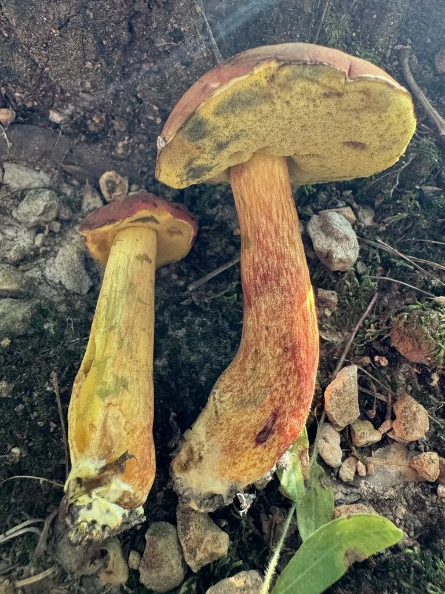

真菌 · 真菌界
双色牛肝菌 Boletus bicolor

菌盖红色、菌管黄色的牛肝菌，颜色对比鲜明，是北美和东亚林下常见的食用菌，生食可能引起肠胃不适。
- 分类
- 门担子菌门纲伞菌纲目牛肝菌目科牛肝菌科属牛肝菌属
- 栖息环境
- 阔叶林和混交林的地面，与栎树等树木形成外生菌根
- 地理分布
- 北美东部和东亚，中国南方和西南林区有分布
- 保护级别
- 暂无评估（IUCN 未评估，中国未列入重点保护名录）
物种志
双色牛肝菌是担子菌门牛肝菌目的外生菌根真菌，子实体单生或群生。菌盖呈半球形至平展，直径 5–12 cm，表面鲜红色至砖红色，光滑；菌盖下面为菌管，呈鲜黄色，受伤后有时变蓝；菌柄粗壮，上部黄色、下部带红色，表面有细纹；孢子印橄榄褐色。
双色牛肝菌与栎树等阔叶树形成外生菌根，多生于阔叶林和混交林的地面，夏秋季出菇，在北美东部和东亚都有分布。它的菌肉厚实、味道鲜美，是林区常见的野生食用菌，但必须充分加热后食用，生食或半生食可能引起肠胃不适。在野外，它常在雨后成片出现，是林区居民熟悉的野生菌之一。采摘时要与有毒的牛肝菌区分，不认识的菌类不要采食。
形态与习性
- 菌盖直径 5–12 cm，鲜红色至砖红色
- 菌管鲜黄色，受伤后有时变蓝
- 菌柄粗壮，上部黄色、下部带红色
- 孢子印橄榄褐色
- 采收期夏秋季，雨后林地上出菇
- 食用性可食，必须充分加热
趣味知识
- 双色牛肝菌的菌盖红色、菌管黄色，颜色对比十分鲜明。
- 它与栎树等阔叶树形成外生菌根，是森林生态的一部分。
- 野生牛肝菌必须充分加热，生食可能引起肠胃不适。